عمر خیام
ریاضیدان، منجم و شاعر
۱۰۴۸ — ۱۱۳۱ میلادی

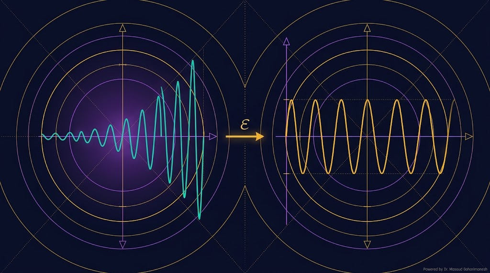
(Multiple Scales & Lindstedt-Poincaré) — جلسه ۱۴
دکتر مسعود گوهری منش
دانشیار گروه مهندسی مکانیک — دانشگاه تربت حیدریه
یادگیری دو روش قدرتمند برای حذف secular term و بهبود دقت Perturbation:
1️⃣ Lindstedt-Poincaré (LP) — تصحیح فرکانس نوسان
2️⃣ روش چند مقیاسی (Multiple Scales) — معرفی مقیاسهای زمانی چندگانه
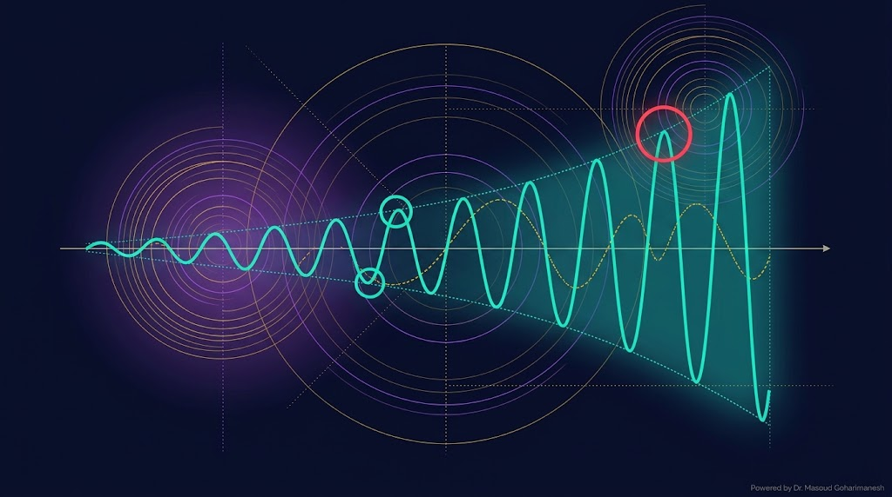
در جلسه ۱۳ دیدیم که حل $y_1$ در معادله Duffing شامل جمله $t \sin t$ میشود که با افزایش $t$ رشد میکند. این پدیده secular term نام دارد.
رشد نامحدود در زمانهای بزرگ
مقایسه حل دقیق با Perturbation ساده در زمانهای مختلف.
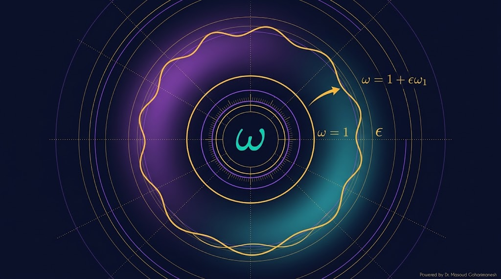
ایدهی درخشان Lindstedt و Poincaré این بود که فرکانس نوسان نیز تابعی از ε است. اگر فرکانس را هم بسط دهیم، میتوانیم secular termها را حذف کنیم.
فرکانس ثابت = ۱ → منجر به secular term
فرکانس هم بسط داده میشود
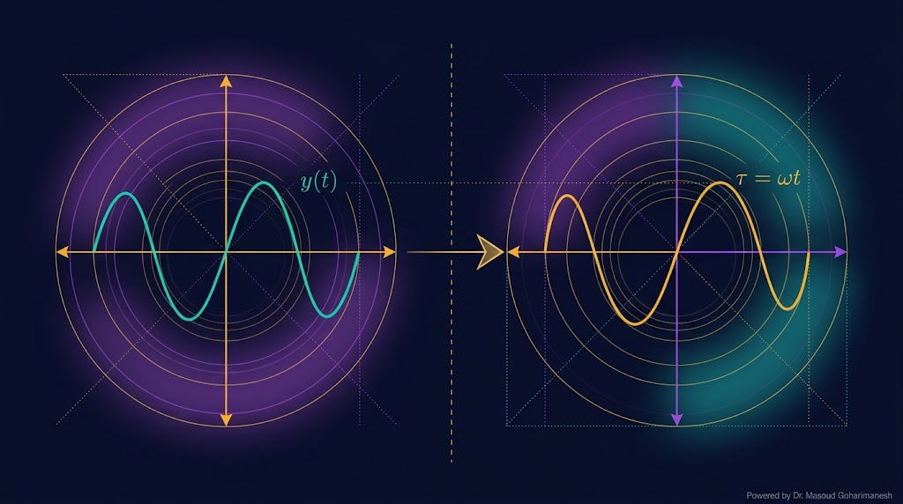
$\tau$ زمان بیبعد جدید است. با این تغییر، معادله به فرم بدون بعد تبدیل میشود.
که $\omega_1، \omega_2، ...$ را باید پیدا کنیم تا secular termها حذف شوند.
مشتقگیری نسبت به زمان واقعی $t$ با مشتقگیری نسبت به $\tau$ و ضرب در $\omega$ جایگزین میشود.
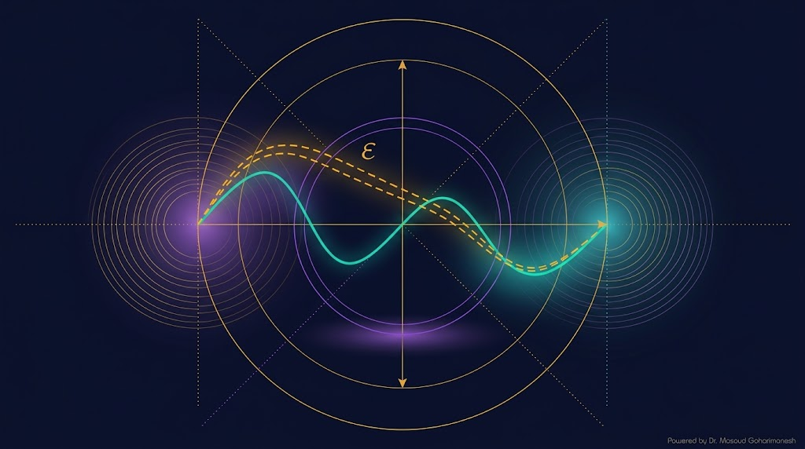
(مشتقات نسبت به $\tau$)
(شرایط اولیه: $y_0(0)=1$، $y_0'(0)=0$)
با استفاده از $\cos^3\tau = \frac{3}{4}\cos\tau + \frac{1}{4}\cos 3\tau$:
برای اینکه $y_1$ شامل secular term نباشد، ضریب $\cos\tau$ باید صفر باشد:
فرکانس تصحیحشده — تابع دامنه!
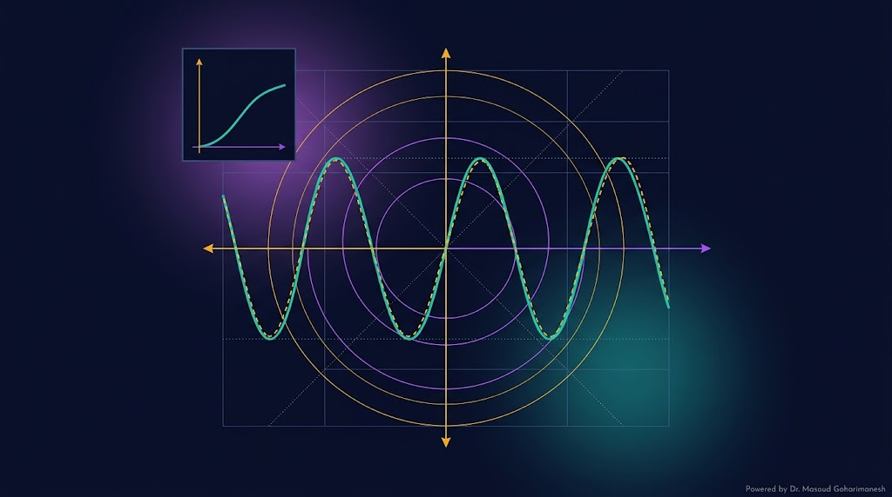
جواب خصوصی:
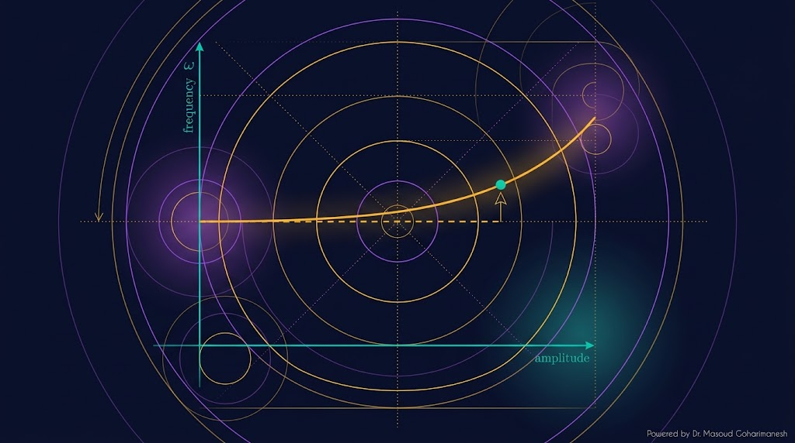
نتیجه اصلی روش LP این است که در اسیلاتورهای غیرخطی، **فرکانس نوسان به دامنه بستگی دارد** — برخلاف اسیلاتورهای خطی.
فرکانس مستقل از دامنه است
فرکانس با دامنه $A$ افزایش مییابد (Hardening)
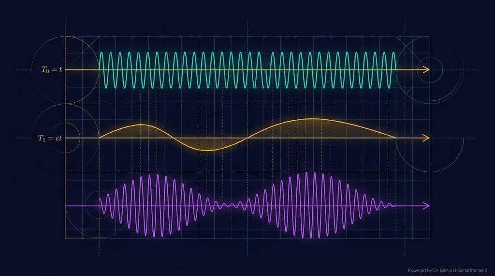
در روش چند مقیاسی، بهجای استفاده از یک زمان، **چند مقیاس زمانی** معرفی میکنیم:
مقیاس نوسان سریع
مقیاس پوش دامنه
مقیاس فرکانس
نکته کلیدی: هر $y_i$ تابعی از همه مقیاسها است.
که $D_n = \partial/\partial T_n$.
با جایگذاری در معادله اصلی و جمعآوری توانهای $\epsilon$، یک سیستم از PDE ها بهدست میآید که مرتبهبهمرتبه حل میشوند.
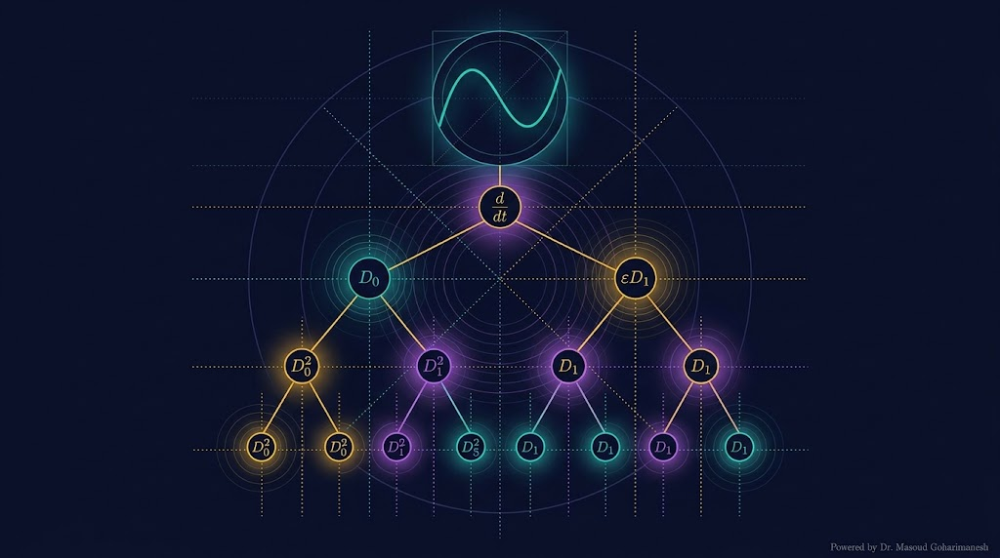
مهمترین ابزار ریاضی در MS، **بسط مشتق زنجیرهای** است. اگر $y = y(T_0، T_1، T_2)$، آنگاه:
با توجه به $dT_n/dt = \epsilon^n$:
و مشتق دوم:
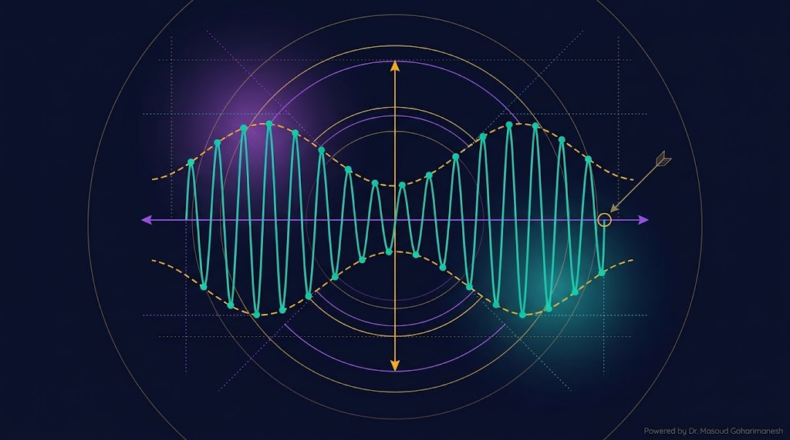
جواب کلی:
که $A(T_1)$ دامنهی کندتغییر است.
با جایگذاری $y_0 = A e^{iT_0} + \bar{A} e^{-iT_0}$:
(c.c. = conjugate complex)
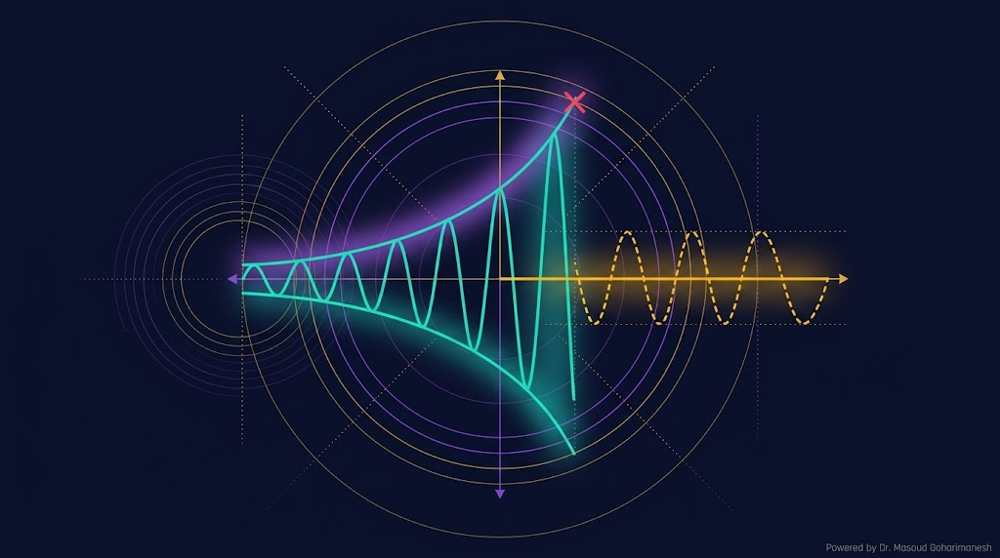
برای اینکه $y_1$ شامل secular term (شامل $T_0 e^{iT_0}$) نباشد، ضریب $e^{iT_0}$ در سمت راست باید صفر باشد:
(که $\bar{A}$ مزدوج مختلط $A$ است)
با نوشتن $A = \frac{1}{2}a e^{i\beta}$ (که $a$ و $\beta$ حقیقی هستند):
یعنی دامنه ثابت است اما فاز با زمان کند تغییر میکند.
$a$ ثابت است (دامنه)، $\beta$ خطی در $T_1$ تغییر میکند.
(مرتبه اول فقط هارمونیک سوم تولید میکند)
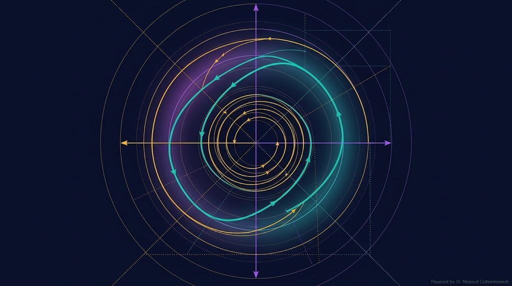
این معادله توسط Balthasar van der Pol (۱۹۲۰) برای توصیف نوسانگرهای الکترونیکی ارائه شد. ویژگی مهم آن: وجود چرخه حدی (Limit Cycle).
دامنه ثابت، مستقل از شرایط اولیه
در دامنه کوچک تقویت، در بزرگ میرایی
مدارات نوسانگر، ضربان قلب
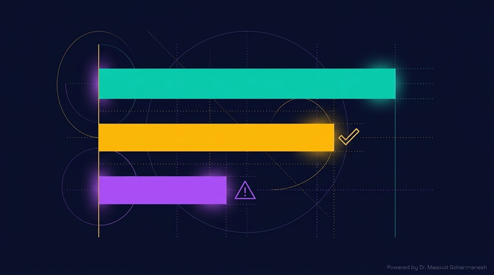
| ویژگی | Perturbation ساده | Lindstedt-Poincaré | Multiple Scales |
|---|---|---|---|
| بسط جواب | $y_0 + \epsilon y_1$ | $y_0 + \epsilon y_1$ | $y_0 + \epsilon y_1$ |
| تصحیح فرکانس | ❌ ندارد | ✅ صریح | ✅ ضمنی |
| حذف secular term | ❌ نمیکند | ✅ خودکار | ✅ صریح |
| دقت برای t بزرگ | ضعیف | خوب | عالی |
| پیچیدگی | ساده | متوسط | پیچیده |
| کاربرد | مسائل ساده | اسیلاتورهای غیرخطی | مسائل پیچیده چندمقیاسی |
% === مقایسه LP با حل عددی برای Duffing === clear; clc; close all; eps = 0.2; % پارامتر اختلال t_max = 60; t = linspace(0, t_max, 3000); % === حل عددی با ode45 === odefun = @(t, y) [y(2); -y(1) - eps*y(1)^3]; [t_ode, Y] = ode45(odefun, [0 t_max], [1; 0]); y_numeric = interp1(t_ode, Y(:,1), t); % === حل LP (مرتبه اول) === omega_LP = 1 + 3/8*eps; y_LP = cos(omega_LP*t) + eps*(1/32*cos(3*omega_LP*t) - 1/32*cos(omega_LP*t)); % === حل Perturbation ساده (نادرست) === y_simple = cos(t) - eps*3/8*t.*sin(t); % === رسم === figure('Color', 'w'); plot(t, y_numeric, 'k-', 'LineWidth', 2); hold on; plot(t, y_LP, '--', 'Color', '#ffb700', 'LineWidth', 1.8); plot(t, y_simple, ':', 'Color', '#ff4757', 'LineWidth', 1.5); xlabel('t'); ylabel('y(t)'); title('Duffing: Exact vs LP vs Simple'); legend('Exact', 'LP', 'Naive'); grid on; fprintf('omega_LP = %.4f\n', omega_LP);
# === مقایسه LP با حل عددی برای Duffing === import numpy as np import matplotlib.pyplot as plt from scipy.integrate import solve_ivp eps = 0.2 t_max = 60 t = np.linspace(0, t_max, 3000) # Exact (numerical) def duffing(t, y): return [y[1], -y[0] - eps * y[0]**3] sol = solve_ivp(duffing, [0, t_max], [1, 0], t_eval=t) y_numeric = sol.y[0] # LP (1st order) omega_LP = 1 + 3/8 * eps y_LP = (np.cos(omega_LP * t) + eps * (1/32 * np.cos(3 * omega_LP * t) - 1/32 * np.cos(omega_LP * t))) # Simple perturbation (wrong) y_simple = np.cos(t) - eps * 3/8 * t * np.sin(t) plt.figure(figsize=(14, 6)) plt.plot(t, y_numeric, 'k-', linewidth=2, label='Exact') plt.plot(t, y_LP, '--', color='#ffb700', linewidth=1.8, label='LP') plt.plot(t, y_simple, ':', color='#ff4757', linewidth=1.5, label='Naive') plt.xlabel('t'); plt.ylabel('y(t)') plt.title('Duffing: Exact vs LP vs Simple') plt.legend(); plt.grid(True, alpha=0.3) plt.savefig('lp_vs_exact.png', dpi=600, bbox_inches='tight') plt.show() print(f'omega_LP = {omega_LP:.4f}')
ارسال تمرینها:
m.goharimanesh@gmail.com
Subject الزامی:
[Advanced Engineering Mathematics] HW14 - نام و نام خانوادگی - شماره دانشجویی
حالا با دو ابزار قدرتمند برای حل اسیلاتورهای غیرخطی آشنا شدید! 🌟
نتیجه کلیدی: فرکانس تابع دامنه
تفاضل محدود و رانگ-کوتا
دکتر مسعود گوهری منش
دانشیار گروه مهندسی مکانیک — دانشگاه تربت حیدریه
🇮🇷 با افتخار برای دانشجویان مکاترونیک 🇮🇷
Secular term در ریاضیات به جملهای گفته میشود که در حل تقریبی معادلات دیفرانسیل ظاهر میشود و با افزایش زمان رشد نامحدود دارد. این جمله معمولاً بهشکل $t \sin t$ یا $t \cos t$ ظاهر میشود.
ریشه لاتین: کلمه secular از ریشه لاتین saecularis بهمعنای «زمانی طولانی، نسلبهنسل» گرفته شده است.
کلمه secular در جامعهشناسی به معنای «دنیوی، غیردینی» است. مفهوم سکولاریسم (Secularism) به فرایندی اشاره دارد که در آن، جامعه بهتدریج از وابستگی به نهادهای دینی جدا میشود و بر ارزشهای عقلانی و علمی تمرکز میکند.
این تغییر — همانند secular term در ریاضیات — کند و تدریجی است و در طول نسلهای متوالی رخ میدهد. به همین دلیل، واژه secular در هر دو حوزه، مفهوم «زمان طولانی» و «تغییر کند» را میرساند.
در هر دو کاربرد (ریاضیات و جامعه)، secular به پدیدهای اشاره دارد که:
این تقارب معنایی — از نجوم تا ریاضیات و جامعهشناسی — نشان میدهد که زبان علم و زبان جامعه، هر دو از یک سرچشمه انسانی میآیند.